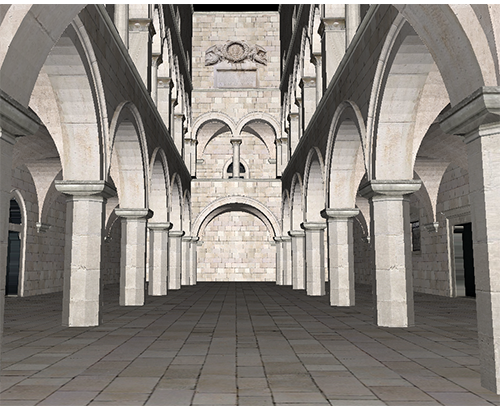
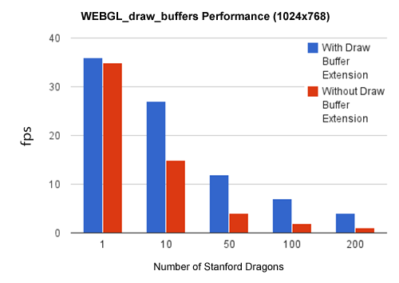

WebGL Deferred Shading
WebGL brings hardware-accelerated 3D graphics to the web. The next version, WebGL 2, is a work-in-progress, but many features are available today as WebGL extensions. In this article, we describe how to use the WEBGL_draw_buffers extension to create a scene with a large number of dynamic lights using a technique called deferred shading, which is popular among AAA games.

Today, most WebGL engines use forward shading, where lighting is computed in the same pass that geometry is transformed. This makes it difficult to support a large number of dynamic lights and different light types.
Some forward shaders use a pass per light. Rendering a scene looks like:
foreach light {
foreach visible mesh {
if (light volume intersects mesh) {
render using shader for this material/light;
accumulate in framebuffer using blending;
}
}
}
This requires a different shader for each material/light-type combination, which can add up. From a performance perspective, each mesh needs to be rendered (vertex transform, rasterization, material part of the fragment shader, etc.) once per light instead of just once, and occluded fragments are still shaded unless front-to-back sorting or a z-prepass is used. In addition, even if a light's volume intersects a mesh, it may only affect a small part of the mesh, but the entire mesh is still rendered.
Forward shaders can also use a single pass making rendering a scene look like:
foreach visible mesh {
find lights affecting mesh;
Render all lights and materials using a single shader;
}
Although meshes are only rendered once, this has the same performance drawbacks for occluded fragments. The biggest drawback is the number of shaders required since a different shader is required for each material/light (not light type) combination. This makes shaders harder to author, increases compile times, usually requires runtime compiling, and increases the number of shaders to sort by.
Deferred Shading
Deferred shading takes a different approach than forward shading by dividing rendering into two passes: one that transforms the geometry and writes positions, normals, and material properties to textures called g-buffers and another that performs lighting as a series of screen-space post-processing effects.
foreach visible mesh {
write material properties to g-buffer;
}
foreach light {
compute light by reading g-buffer;
accumulate in framebuffer;
}
This decouples lighting from scene complexity only requiring one shader per material and one shader per light type. Since lighting takes place in screen-space, occluded fragments are not shaded, essentially bringing the depth complexity down to one for lighting.
Until recently, WebGL had a roadblock for implementing different shading. In WebGL, a fragment shader could only write to a single texture/renderbuffer. With deferred shading, the g-buffer is usually composed of several textures. This means that the geometry needed to be rendered multiple times.
Now with the WEBGL_draw_buffers extension, a fragment shader can write to several textures making deferred shading possible in WebGL. To use this extension in Firefox, browse to about:config and turn on webgl.enable-draft-extensions. Then, to make sure your system supports WEBGL_draw_buffers, browse to webglreport.com and verify that it is in the list of extensions at the bottom of the page.

To use the extension, first initialize it:
var ext = gl.getExtension("WEBGL_draw_buffers");
if (!ext) {
// ...
}
Now we can bind different texture units to framebuffer slots:
var buffers = [];
buffers[0] = ext.COLOR_ATTACHMENT0_WEBGL;
buffers[1] = ext.COLOR_ATTACHMENT1_WEBGL;
buffers[2] = ext.COLOR_ATTACHMENT2_WEBGL;
buffers[3] = ext.COLOR_ATTACHMENT3_WEBGL;
ext.drawBuffersWEBGL(buffers);
In the geometry pass, the fragment shader writes to the textures. A trivial pass-through fragment shader for testing would be:
#extension GL_EXT_draw_buffers : require
precision highp float;
void main(void) {
gl_FragData[0] = vec4(1.0);
gl_FragData[1] = vec4(1.0);
gl_FragData[2] = vec4(1.0);
gl_FragData[3] = vec4(1.0);
}
Even though we initialized the extension in JavaScript with gl.getExtension, the GLSL code still needs to include #extension GL_EXT_draw_buffers : require to use the extension. Without the extension, fragment shaders write to gl_FragColor; with the extension, fragment shaders now have access to gl_FragData, which is an array.
In our project, we have four different textures/buffers, respectively are depth buffer, normal buffer, position buffer and color buffer. Besides depth buffer uses unsigned short DEPTH_COMPONENT, other textures/buffers are using floating point RGBA format.
Depth Rendering

Normal Rendering

Position Rendering

Color and Ambient Rending 
G-Buffers Layout

The extension allows a single geometry pass to write to all the g-buffers, which improves performance and reduces the amount of JavaScript code. The difference between these two methods becomes bigger as scene complexity increses. Performance numbers using FireFox 25.0.1 and an NVIDIA GT 620M on Window 8 are shown below.

Screen shot of draw buffer extension test on WebGL using Stanford Dragon .

Deferred shading requires a lot of GPU memory bandwidth, which is not ideal for performance or power. In a naive implementation, each light is rendered as a full-screen quad and reads the entirety of each g-buffer. Since most light types, like point and spot lights, attenuate and have an area of influence, the full-screen quad can be replaced with a world-space (or other object coordinate space) bounding volume or tight screen-space bounding rectangle.
Tile-Based Deferred Shading
Tile-based deferred shading takes this a step farther and splits the screen into tiles, for example 16x16 pixels, and then determines which lights influence each tile. Light-tile information is then passed to the shader and the g-buffer is only read once for all lights. Since this drastically reduces memory bandwidth, it improves performance. The following image contains 200 lights on a 800x600 screen with 16x16 tile size.

The size of tile affects the performance. Small tile means more computation on lighting construction and storage on light-tile information, but less computation on lighting in shader. The big tile is the opposite. Therefore, choosing a suitable tile is important for the performance. The figure below is shown the relationship between tile size and performance.

Tile debug visualization is shown below. Each tile indicates the density of lights. More lights in a tile are more close to white.


Acknowledgements
We implemented this project for the course CIS 565: GPU Programming and Architecture, which is part of the computer graphics program at the University of Pennsylvania. We thank Liam Boone for his support and Eric Haines for reviewing this article.
References
- Our source code is on github
- Models we are using
- Deferred Rendering in Killzone 2. Michal Valient
- Light Pre-Pass. Wolfgang Engel
- Compact Normal Storage for Small G-Buffers. Aras Pranckevicius
- Tiled Shading. Ola Olsson and Ulf Assarsson
- Deferred Rendering for Current and Future Rendering Pipelines. Andrew Lauritzen